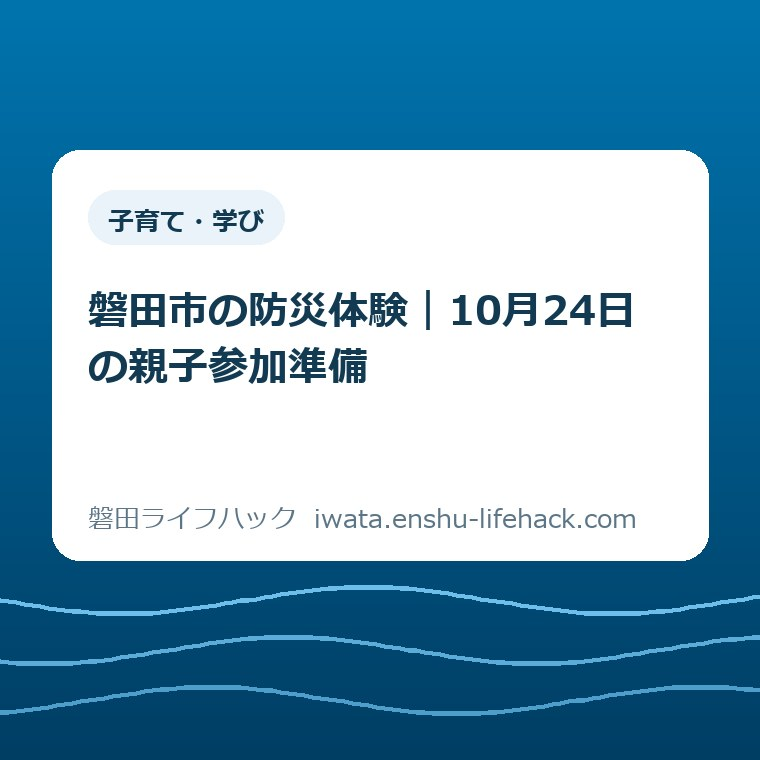

子育て・学び
磐田市の防災体験｜10月24日の親子参加準備

この記事の要点
Q. 小学生と防災体験に行く前に、何を確かめればいい？
A. 磐田市の実践型防災体験プログラムは2026年10月24日9時30分〜15時30分、ククデココ企業組合で開催。市内在住・在勤が参加資格で、小学生以下は保護者同伴です。事前申込み・先着30名、1名500円を当日徴収。残席は未確認です。まず親子それぞれの参加資格を市公式ページで確かめてください。
親子の予定を動かす前に、参加条件を一枚にする
参加条件は、家族の住所や勤務先、子どもの年齢などの個別条件で確認が必要です。磐田市の実践型防災体験プログラムに行きたいと思っても、土曜日の家族全員の予定がすぐにそろうとは限りません。付き添う人の仕事、きょうだいの用事、送り迎えまで調整する手間があります。
防災を学びたい気持ちだけで、予定が空くわけではありません。保護者はすでに、学校や習い事の予定と暮らしをつなぐ作業をしています。その上に「防災だから参加すべきだ」と用事を足す書き方を、私はしたくありません。参加の判断に必要な条件を先に並べます。
大石浩之（磐田市／不動産業）です。この記事では、地域の防災訓練全般を解説するのではなく、2026年10月24日の体験に親子で参加する前の準備に絞ります。2026年10月15日に確認した市の開催案内と、家族への私の提案を段落を分けて記します。
最初に確認したいのは、親子それぞれが参加資格に当てはまるかです。服や持ち物をそろえてから対象外と分かると、準備した時間も子どもの期待も宙に浮きます。私は、持ち物より資格を先に確認する順番をすすめます。
公式案内で分かる日時・会場・申込み
磐田市公式「実践型防災体験プログラム」の開催日は2026年10月24日土曜日です。時間は9時30分から15時30分まで。会場はククデココ企業組合で、住所は磐田市岩井3048－1です。市のページ番号は1016931、表示されている更新日は2026年9月17日です。
開催時間の開始から終了までは6時間あります。これは9時30分から15時30分までの時間差であり、移動や受付にかかる時間は含みません。内容ごとの時刻、休憩の配分、受付開始時刻までがこの数字から分かるわけではありません。
市公式案内では、申込みは必要で、募集人数は先着30名です。費用は1名500円を当日受付で徴収すると記載されています。予約なしで会場へ行く催しではありません。また「先着30名」は定員の説明であって、2026年10月15日に30人分が空いているという意味ではありません。
申込フォームへのリンクは市公式ページにあります。ただし、本記事ではフォームの受付継続と残席を確認できていません。申込期限を独自に補ったり、開催日まで受け付けると判断したりはしません。市公式ページから、その時点の案内を確かめる必要があります。
家族の予定表には、まず会場名と住所、9時30分〜15時30分という枠を一緒に書くのが私の提案です。時刻だけを共有すると、移動を担う人には行き先が伝わりません。自宅からの移動時間は家族によって異なるため、この記事では一律の集合時刻を作りません。
「どなたでも」と市内在住・在勤は分けて読む
磐田市公式案内には、対象として「どなたでも」「小学生以下は保護者同伴」とあり、別の参加資格欄に「磐田市内在住・在勤」とあります。対象欄だけで市外の家族も無条件に参加できると読むことはできません。年齢と同伴、居住地や勤務先を分けて確かめる必要があります。
一見すると意外なのは、「どなたでも」という言葉があっても、参加資格欄の確認が残ることです。保護者が磐田市内に勤め、子どもは市外に住む場合、保護者の資格をそのまま子どもへ広げられるかは案内本文だけでは確定できません。家族単位で自動的に対象になるとは書かれていません。
小学生以下は保護者同伴という条件も、申込人数とあわせて確認したい箇所です。子どもを会場に送り届け、終わりに迎えに行く段取りでは、同伴の条件を満たすと判断できません。付き添う大人が当日の時間を確保できるかも、参加準備に含まれます。
私なら、申込みの入力を始める前に、参加予定の子どもの年齢、住所、保護者の住所か勤務先を手元で確かめます。名前や勤務先を家族以外へむやみに共有する必要はありません。対象かどうかを判断するために、家庭内で必要な情報をそろえるという意味です。
問い合わせる場合の聞き方は、「保護者は市内勤務、子どもは市外在住です。親子で対象になりますか」のように条件を短く伝えると整理しやすいと私は考えます。市の担当窓口は危機管理課の防災対策グループ、電話は0538-37-2116です。市公式ページの連絡先と受付時間もあわせて確認してください。

500円を家族の支出と6時間の予定に置き換える
磐田市公式案内の参加費は1名500円で、当日受付での徴収です。親1人と子1人をそれぞれ参加者として数えるなら、500円×2人で1,000円になります。親1人と子2人が全員参加者なら、500円×3人で1,500円です。いずれも人数を仮定した計算です。
同伴だけの保護者や未就学児を費用・定員でどう数えるかは、市の案内本文からは確定できません。子どもの人数だけを見て参加費を用意すると、想定とずれる可能性があります。家族の人数を伝え、申込みに含める人と当日支払う人数をそろえて確認してください。
私は、参加費が500円だから負担も小さい、と一言で片づけるのは違うと考えます。6時間の付き添い、往復の移動、きょうだいの預け先まで含めて、家族は予定を払っています。防災の理念より先に、その家族が無理なく動ける段取りを整える。それが私の判断です。
昼食の用意、駐車場の利用条件、途中参加や途中退出の扱いは、確認した市のページ本文には具体的な説明がありません。防災食づくりが内容にあることと、全員の昼食が用意されることは同じではありません。私から食事込みと案内することはできません。
私なら、予定の相談で「土曜は防災に行く」とだけ伝えず、「岩井で9時30分〜15時30分、付き添いが必要」と伝えます。その上で昼食や移動の未確認事項を別に残します。未確認のまま約束を増やさない方が、付き添う人も待つ家族も予定を組みやすくなります。

トイレ・水・防災食で何を持ち帰りたいか
磐田市公式案内の体験内容には、災害時のトイレ、水の確保、防災食つくり、地震から身を守る行動の実践などが挙げられています。細かな実施順序や使用する器具までをこの記事で補うことはしません。家族が何を確かめたいかを考える入口として読めます。
私は、子どもに全部を覚えてもらうより、帰宅後に家族へ一つ説明できるものが残ればよいと考えます。例えばトイレに関心があれば「家にある道具で足りるのか」を考える入口にする。水が気になれば「誰がどこから運ぶのか」を家の話へ戻す。その問いは家庭ごとに変えて構いません。
体験で実際に扱う方法や食品は主催者の案内に従ってください。食物アレルギー、体調、配慮が必要な事情がある場合の対応は、参加を決める前に確認する事項です。市の紹介文に記載がないから対応可能、あるいは対応不可と判断することはできません。
防災体験と地域の訓練は、同じ日に同じことをするとは限りません。家庭の連絡方法や地域での確認事項を整理したいときは、磐田市の防災訓練を家族で確かめる記事も参照できます。今回の記事はイベントの参加条件と当日の負担に軸を置いています。
磐田市公式「地域の防災対策に関する各種資料」では、自主防災会長の手引きや避難所運営マニュアルなどを案内しています。体験イベントの申込みとは別の資料です。体験後に地域の防災へ関心が広がった場合の参照先として、出典欄に載せました。
良い点——生活の困りごとを体験の入口にできる
実践型防災体験プログラムの良い点は、私にはトイレ・水・食という生活の言葉で内容を選べるところに見えます。防災の用語を先に覚える形より、家族が「うちは何に困りそうか」を話す入口を見つけやすいからです。イベントの成果を保証する意味ではありません。
費用が1名500円、徴収が当日受付と明記されている点も、予定を立てる側には助かります。参加費そのものと、移動や食事に必要な支出を分けて考えられます。私は、学べる内容だけでなく、支払いの場所と時点まで示す案内を評価します。
小学生以下の保護者同伴が明示されているため、子どもだけの行事として予定に入れる誤解も避けやすくなります。私の考えでは、保護者も同じ場で学べる機会には意味があります。ただし、その意味は付き添いの仕事や家庭の用事を消してくれるわけではありません。
注文したい点——付き添いの扱いを先に知りたい
実践型防災体験プログラムの案内について私が注文したい点は、同伴者の費用と定員の数え方を、家族が判断しやすい形で知りたいことです。先着30名という枠の中で、親子を何人として申し込むかは、予定を動かす前に必要な情報だと考えます。
昼食、駐車場、天候による変更、体調や食物アレルギーへの対応も、家族によっては参加判断を左右します。これは市の対応がないという指摘ではありません。確認したページ本文だけでは分からないため、私が勝手に埋めずに残す項目です。
問い合わせ先は公式ページにありますが、一度の確認で必要事項がそろうと家族の手間を減らせます。私は、未確認事項を箇条書きにしてから連絡する方法をすすめます。「費用は何人分か」「食事は何を用意するか」のように聞ければ、家族内で案内を読み直す負担も抑えられます。
対案・結論——今日の一歩は親子の参加資格確認
2026年10月24日の親子参加に向けて、今日の一歩は親子それぞれの参加資格を市公式ページで確認することです。住所や勤務先、年齢を条件に照らし、判断できない組合せだけ市へ尋ねる。この一歩が済めば、対象かどうか分からないまま予定を広く動かさずに済みます。
参加資格を確認できた後に、受付状況、同伴する人数、費用の扱い、当日の予定を順に確かめるのが私の提案です。まだ受付中かどうかを本記事で保証することはできません。フォームに入力できることと、参加の確定を同じものとして扱わず、申込先の案内に従ってください。
市公式案内の持ち物は、動きやすい服装・飲み物・帽子・タオルなどです。「など」とされているため、持参品がこの四つだけで完了するとは断定しません。申込み後に追加の案内を受け取った場合は、その内容に合わせて当日の支度をしてください。
家族への共有は、参加者、付き添う人、費用の確認結果、会場住所、開催時間を書いた一枚のメモで足りると私は考えます。申込先からの案内は別に保存します。子どもには、持っていく物のうち自分で選べる物を一つ任せる程度でも、体験へ向かう準備になります。
大石の視点——参加の前後で、家の段取りにつなぐ
私はこう考えます。防災を学ぶ予定を家族に足すなら、「行けば安心」とは言わず、何を家へ持ち帰るかまで考えたい。親子で参加した実話として書ける体験素材は今回はありません。ここに記した順番は、家計と段取りを先に見る私の意見です。
私が迷うのは、6時間という枠を、小学生のいるすべての家庭に勧めてよいかという点です。きょうだいの年齢や付き添う大人の働き方で、同じ6時間でも負担は変わります。申し込めない家庭を、防災への関心が薄いと見る理由にはなりません。
体験の後に情報の読み方も確かめたければ、危険警報と避難指示の違いを整理した記事が入口になります。器具による家の備えに関心が移ったときは、感震ブレーカーを比較する記事もあります。一度の参加で全てを済ませる予定にしなくて構いません。
親子が対象かを先に確かめる。それだけでも、家族が次に相談する材料は増えます。開催日時、受付状況、同伴者の扱いは変わる場合があるため、最後は必ず磐田市公式「実践型防災体験プログラム」の最新案内で確認してください。
参加準備のFAQ
親子参加で迷いやすい条件を、2026年10月15日に確認した市公式案内の範囲で整理します。
小学生だけで参加できますか。
小学生以下は保護者同伴です。対象欄には「どなたでも」とありますが、別に磐田市内在住・在勤という参加資格があります。小学生だけを送迎して預けられる催しとは読み取れません。保護者と子どもの住所などが異なる場合や、市外在住で保護者だけ市内勤務の場合は、親子それぞれが対象になるか、市の担当窓口で確かめてください。
親子2人で参加すると、いくら必要ですか。
市公式ページの費用は1名500円で、当日受付で徴収します。親1人と子1人がともに参加者として数えられる場合の単純計算は1,000円です。付き添いだけの保護者の扱い、未就学児の費用、昼食や移動の費用までは本文から確定できません。申込み前に参加人数と同伴者の扱いを確認し、家族全体の負担を見積もってください。
2026年10月15日時点で、まだ申込みできますか。
市公式ページでは事前申込みが必要で、定員は先着30名です。ただし2026年10月15日の残席と、申込フォームの受付継続は本記事では確認できていません。開催案内が表示されていることだけで参加可能とは判断しないでください。市公式ページから最新の受付状況を確認し、不明な場合は市の担当窓口へお問い合わせください。
参考にした公式情報
- 実践型防災体験プログラム／磐田市（2026年10月15日確認）
- 地域の防災対策に関する各種資料／磐田市（2026年10月15日確認）
最終確認日：2026-10-15 ／ 本記事は公表情報と執筆者の見解を分けて記載しています。制度・数値・公開状況は変更される場合があるため、最新情報は磐田市公式ページでご確認ください。